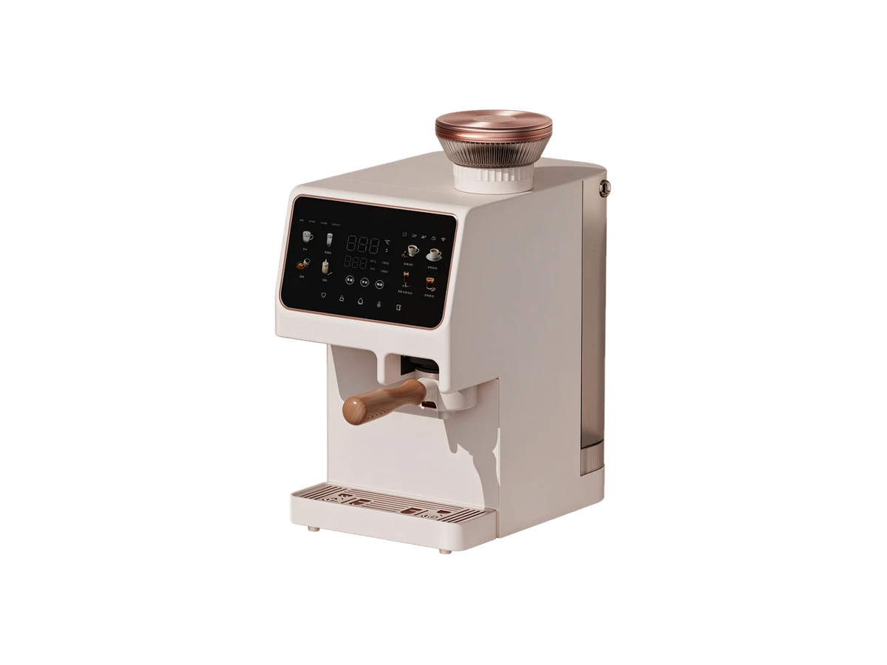

Countertop
CountertopRP-C07
RO purifier with heating jug
SKU: RP-C07
MOQ: Confirm on enquiry
Home / Products / Countertop Systems / RP-C11

Countertop Systems
RO purifier with freshly ground coffee (M2405RN)
RP-C11 — RO purifier with freshly ground coffee. Key specification: RO capacity 50 / 100 / 200 GPD. Specifications are confirmed per model and order.
Voltage / frequency is configurable to the target country. Other configurations are confirmed per order.
RP-C11 is a countertop RO purifier that also brews fresh coffee, so one machine covers purified water and coffee instead of two separate appliances. It comes in two variants: a freshly ground coffee model and a bean-to-cup 4-in-1 model that purifies, grinds, extracts and heats in one unit. The freshly ground coffee variant runs at 50, 100 or 200 GPD with a rated purified volume of 4000 L, and both variants heat water on demand. It is built for brand owners who want a premium countertop product that stands out from a standard water purifier.
What is the minimum order quantity?
The first order is 200 units per model, and reorders are 500 units.
Can I order a sample before a bulk order?
Yes. Samples are ready in 15 days, and the sample fee is refunded on your first bulk order. Bulk orders take 40 days after sample approval and ship FOB Shenzhen.
Which coffee variant should I choose?
Quote as RP-C11 and specify the variant: freshly ground coffee or bean-to-cup. The bean-to-cup variant is the 4-in-1 unit.
Two countertop coffee variants — quote as RP-C11 and specify the variant (freshly ground coffee or bean-to-cup).
Hover over a variant image to see its specifications. On touch screens, tap an image.

Full specifications for each variant, side by side. The specification table further down shows RP-C11's values.
| Specification | RP-C11-1 — freshly ground coffee (M2405RN) | RP-C11-3 — bean-to-cup variant (Y521) |
|---|---|---|
| Function | Freshly ground coffee | Purifying, bean grinding, extraction and instant heating — 4-in-1 coffee machine |
| RO capacity | 50 / 100 / 200 GPD | Confirmed per order |
| Purified-water flow | ≥0.13 / ≥0.25 / ≥0.52 L/min | Confirmed per order |
| Rated power | 2140 W | 2100 W |
| Dimensions | 370 × 220 × 383 mm | 238 × 332 × 390 mm (W × D × H) |
| Rated purified volume | 4000 L | Confirmed per order |
| Filtration | PP + CTO + PP + RO + C (Toray RO membrane) | PCRO + C: PP cotton + activated carbon + RO + post activated carbon |
| Water tank | 4.8 L raw-water tank; 1.2 L pure-water tank | 4.0 L |
| Heating | 20 L/h at ≥90°C | Instant heating, PID control ±3°C |
| Voltage / frequency | Configurable to target country | Configurable to target country |
| Other features | — | 5 adjustable grind settings; 15 Bar pump pressure; 250 g bean hopper |
9 specification rows from the ROPureOEM catalogue.
| RO capacity | 50 / 100 / 200 GPD |
|---|---|
| RO production | ≥0.13 / ≥0.25 / ≥0.52 L/min |
| Rated power | 2140 W |
| Dimensions | 370 × 220 × 383 mm |
| Rated purified volume | 4000 L |
| Heating capacity | 20 L/h at ≥90°C |
| Filtration | PP + CTO + PP + RO + C (Toray RO membrane) |
| Voltage / frequency | Configurable to target country |
| Other configurations | Confirmed per order |
Specifications are taken from the ROPureOEM catalogue. Where a value is not yet confirmed, it is listed as “Confirmed per order” — we do not publish unconfirmed figures.
CountertopRO purifier with heating jug
SKU: RP-C07
MOQ: Confirm on enquiry
 Countertop
CountertopAll-in-one cartridge countertop purifier
SKU: RP-C08
MOQ: Confirm on enquiry
 Countertop
CountertopRO purifier with ice, hot and cold water
SKU: RP-C09
MOQ: Confirm on enquiry
 Countertop
CountertopCountertop RO with compressor cooling
SKU: RP-C10
MOQ: Confirm on enquiry